미세플라스틱
-글리터 화장품이 초래하는 환경오염 문제

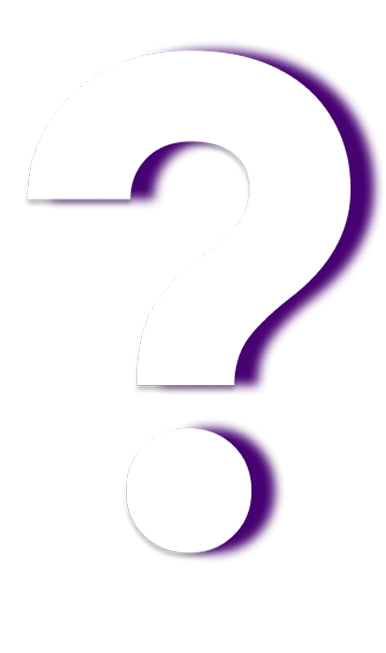
아이섀도, 립스틱, 네일, 미스트 등
글리터를 함유한 많은 제품들이 출시되고있다.✨💄
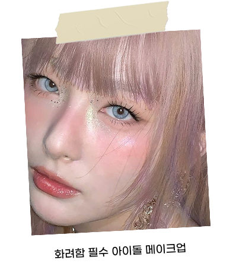
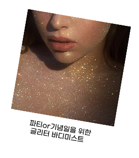
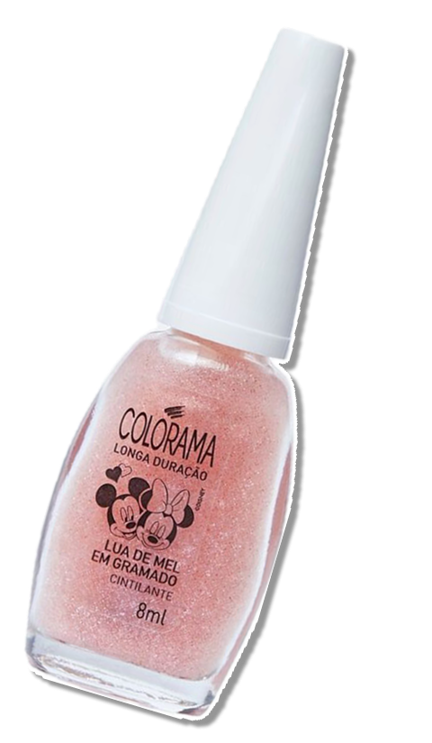
글리터/펄 네일
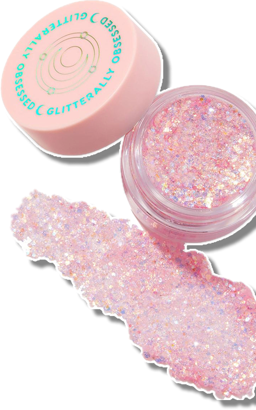
헥사·원형 글리터 조합
메이크업보다 바디 글리터류에 쓰이는 타입
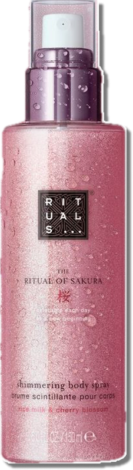
Shimmering Body Mist
샤워 후 광택/바디 하이라이트용
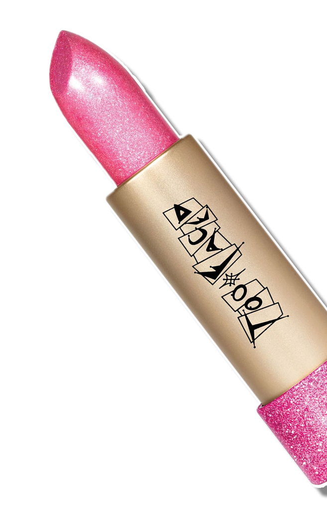
글리터가 들어간 쉬머 립
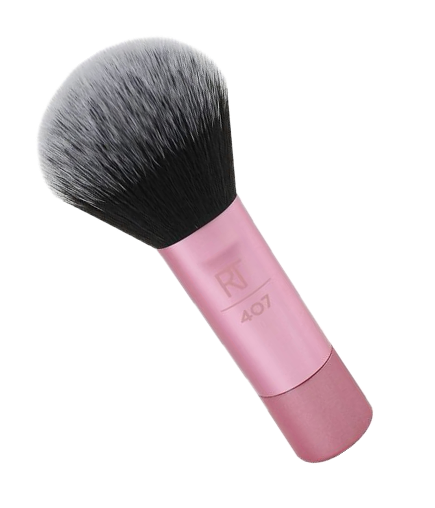
📈다양한 메이크업 연출이 가능한 글리터 화장품은 전 세계적으로 수요가 꾸준히 증가하고 있다.
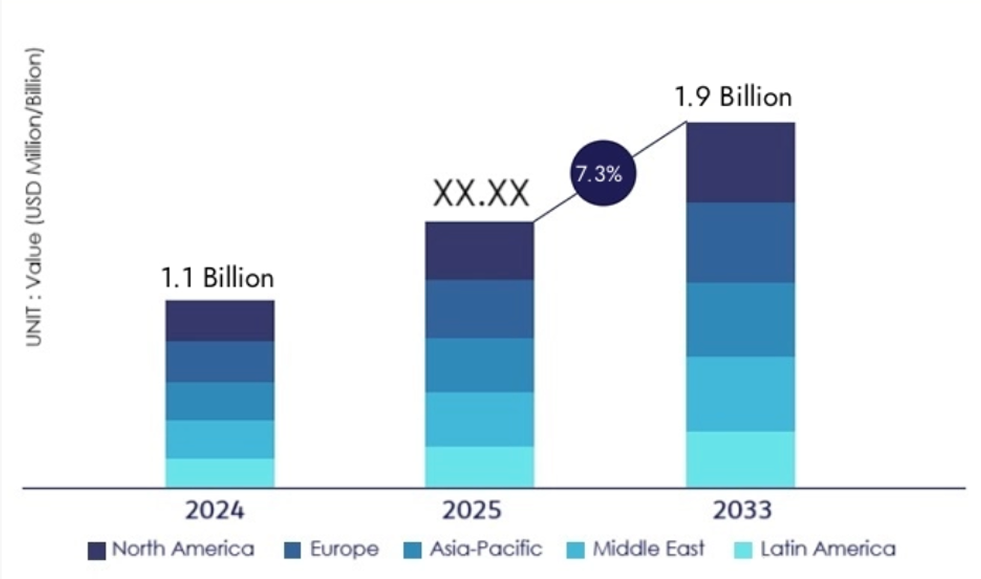
세계 글리터회사 규모와 전망(2025)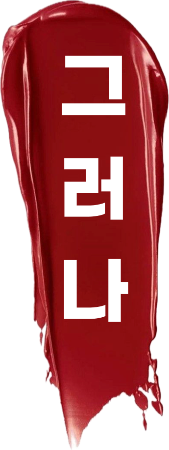
⚠️PET소재로 만들어진 글리터의 크기는 대부분 5mm이하인 미세플라스틱이다.
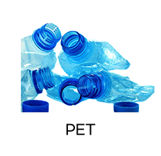
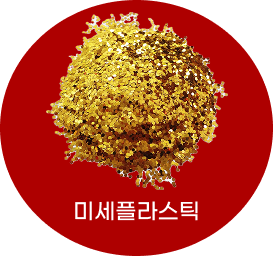
일반적으로 글리터(glitter)는 흔히 PET라고 불리는 폴리에틸렌 테레프탈레이트(polyethylene terephthalate) 소재와 알루미늄을 더한 것이다.페트병에 쓰이는 소재로 보면 쉽다.
미세 플라스틱은 5mm 이하의 작은 플라스틱 입자를 의미한다.
PET 소재로 만들어진 글리터의 크기는 대부분 5mm 이하이기 때문에 미세 플라스틱이다.
보통 큰 플라스틱이 풍화되어 잘게 부서져 만들어지는 미세 플라스틱과 다르게,
처음부터 미세하게 가공된플라스틱인 셈이다.
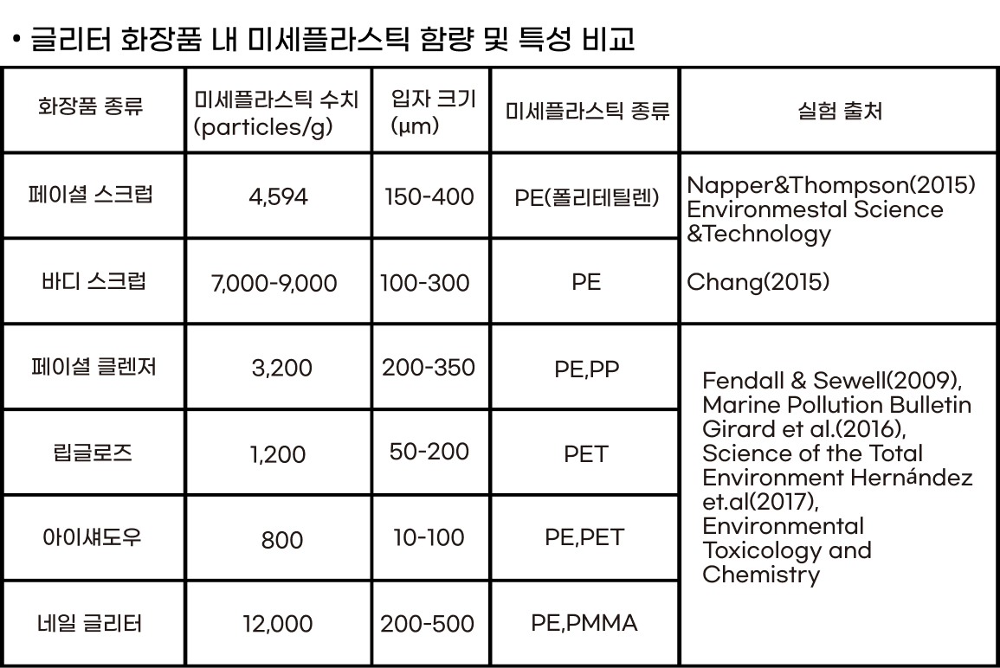
미세플라스틱과 관련하여 실행된 연구들에서 제품 1g당 몇 입자의 미세플라스틱이포함되어 있는가를 측정하기 위해
세안제, 각질제거제(스크럽), 클렌저, 세정용 제품 등의 일정량을 시험 샘플로 사용하였다.
여러 연구를 종합했을때 화장품 속 미세플라스틱 함량은
1g당 2,162개의 입자가 포함된 것으로 나타났다.
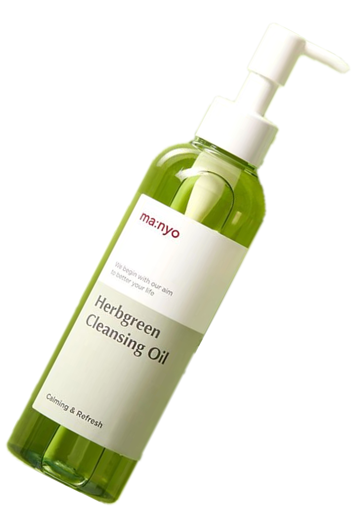
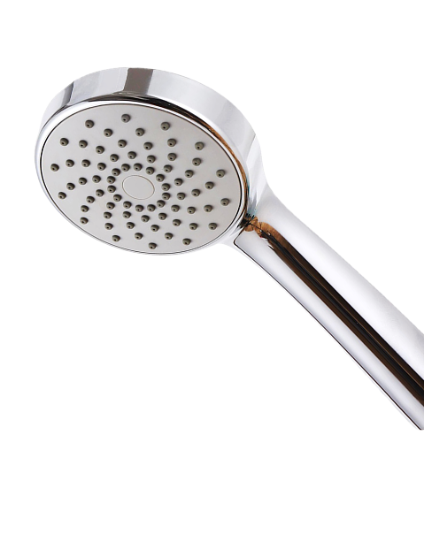
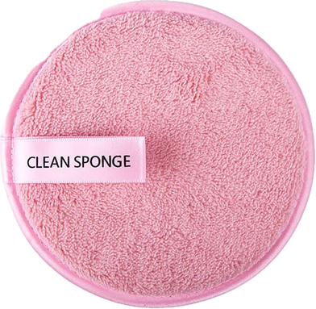
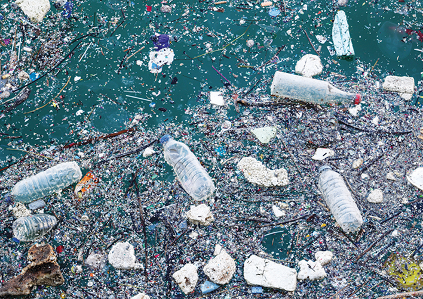
일본 통계청에 따르면, 2050년에는 바다에 버려지는 플라스틱 쓰레기의 양이바닷속 물고기의 양을 초과할 것으로 예상되고있다.
미세플라스틱은 특히 생분해되지 않고 해양생물들 몸 속에 쉽게 유입될 수 있다는 점에서
위험성이 크게 대두된다.
미세 플라스틱을 삼킨 해양 동물은 물리적인 상처에서부터 장폐색, 산화 스트레스, 섭식 행동 장애,
에너지 할당 감소 등 여러 가지 부작용을 겪을 수 있다.
게, 갯지렁이, 굴 등을 대상으로 한 연구에서는 미세 플라스틱이
성장과 번식에도 장애를 일으키는 것으로 나타났다.
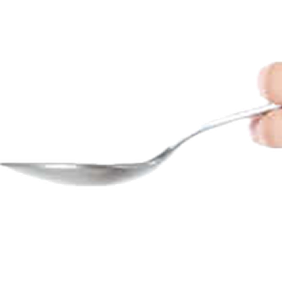
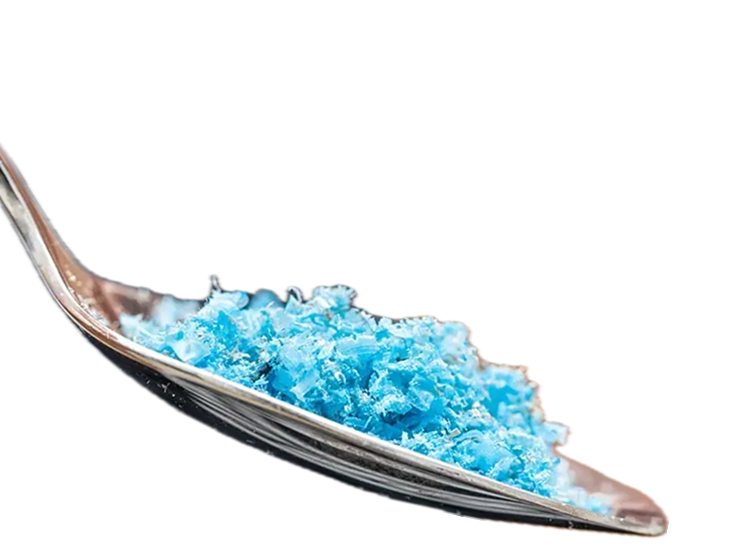
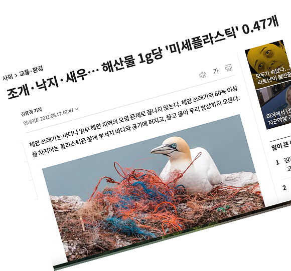
대안은
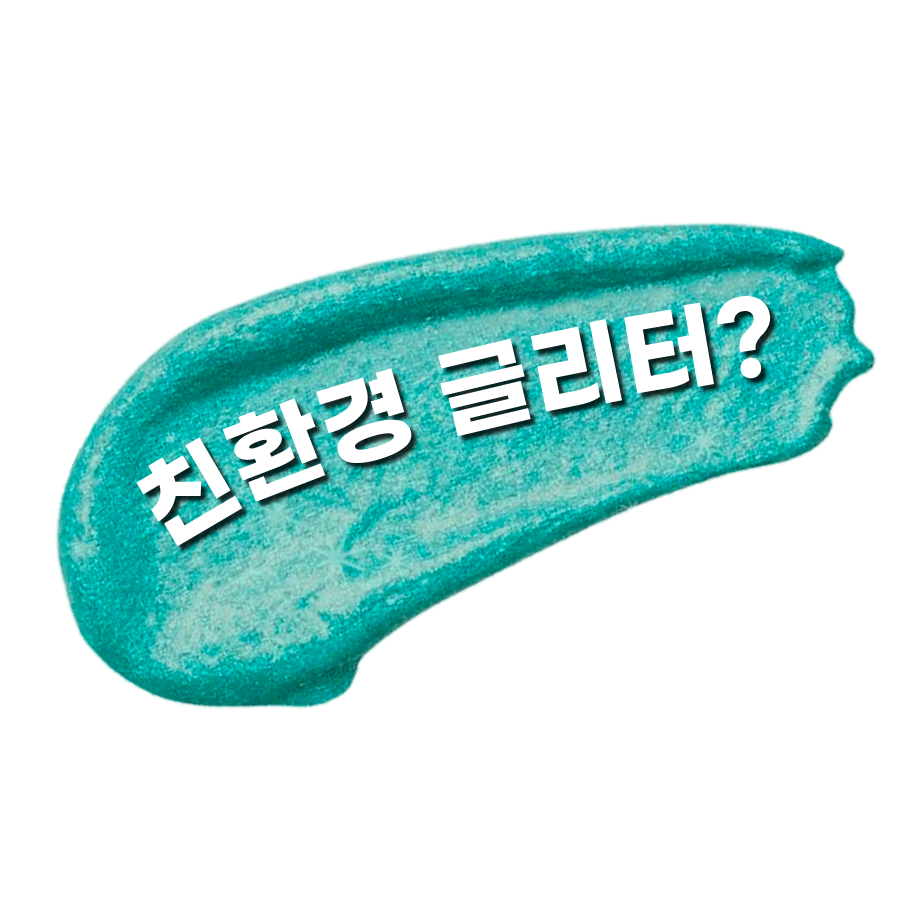
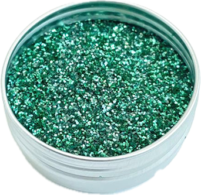
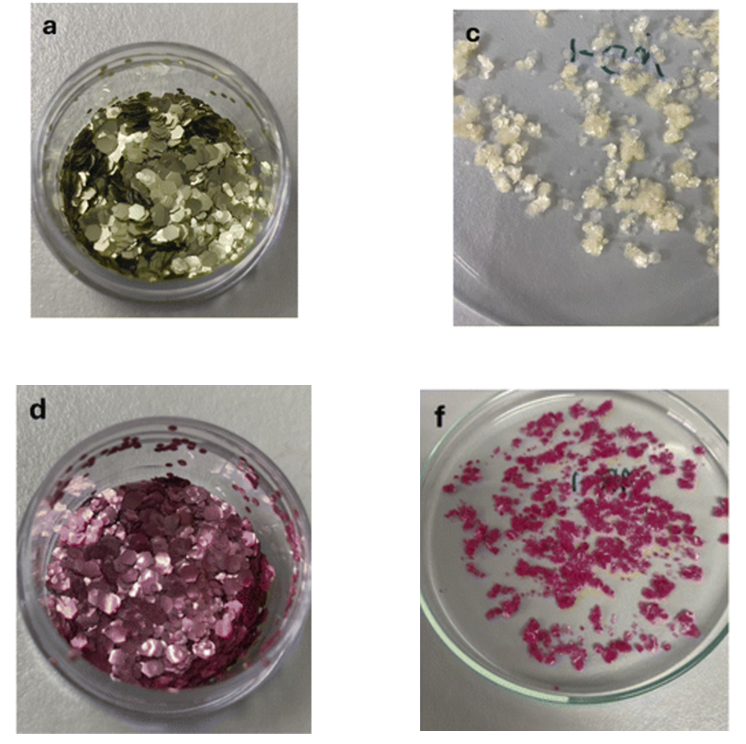